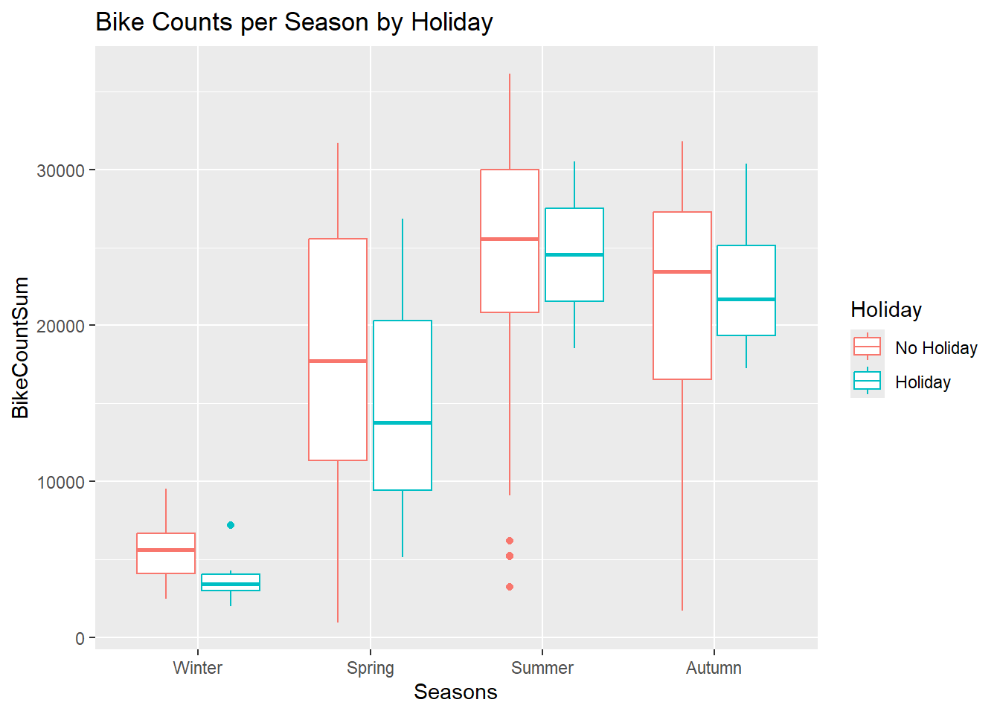
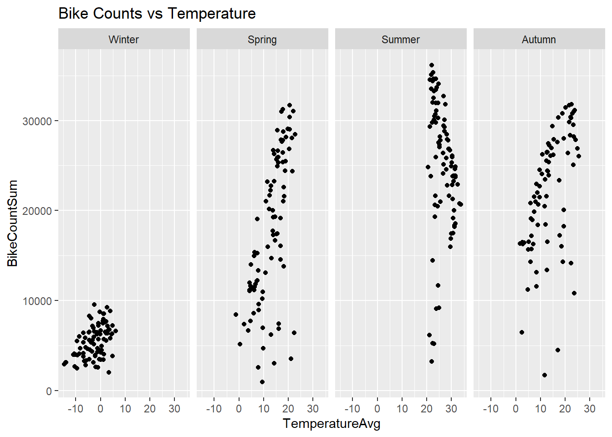
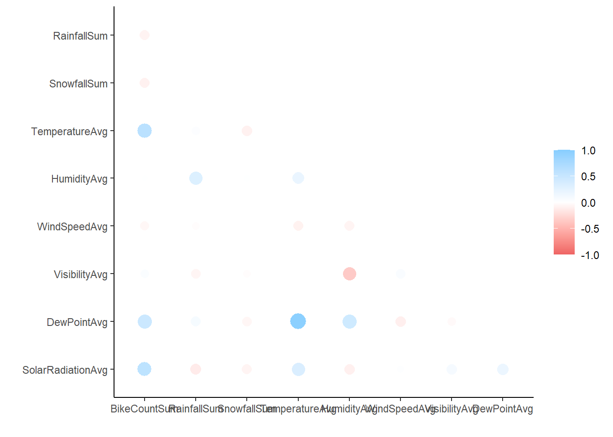
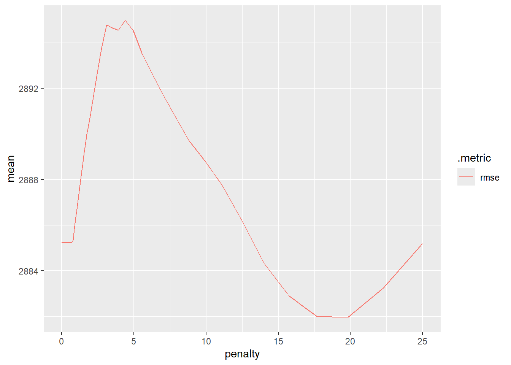
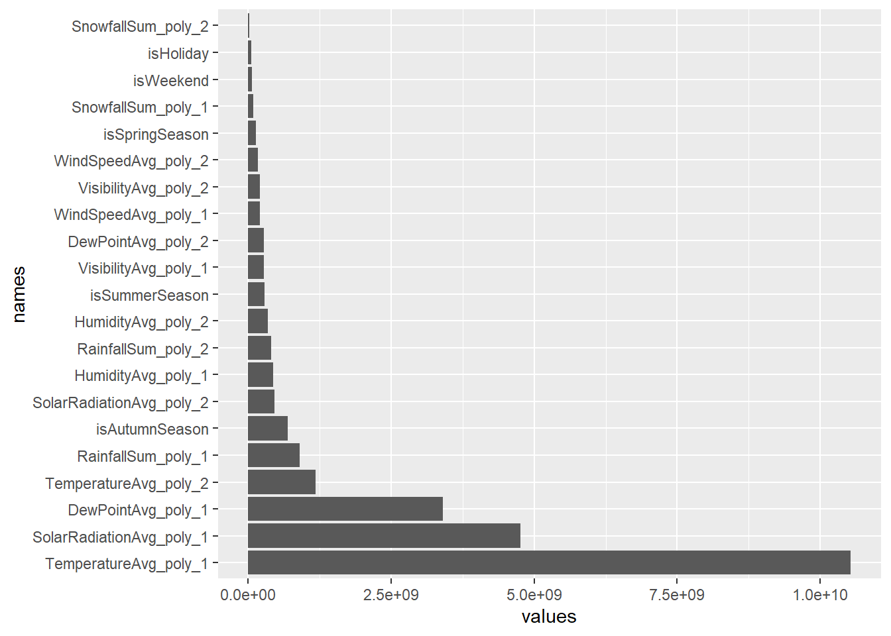

The first half of this document is my homework 8 content. We will take the MLR model chosen from HW8, create additional models, and compare to find the best one.
Previous work in Homework 8
This document demonstrates use of the principles and steps to make models in R:
read data
check the data
split the data
fit models
apply best model
Context
Libraries
This work relies heavily on tidymodels packages and related items, so we include this and the standard tidyverse code.
Warning: package 'tidymodels' was built under R version 4.4.2
Warning: package 'dials' was built under R version 4.4.2
Warning: package 'infer' was built under R version 4.4.2
Warning: package 'modeldata' was built under R version 4.4.2
Warning: package 'parsnip' was built under R version 4.4.2
Warning: package 'recipes' was built under R version 4.4.2
Warning: package 'rsample' was built under R version 4.4.2
Warning: package 'tune' was built under R version 4.4.2
Warning: package 'workflows' was built under R version 4.4.2
Warning: package 'workflowsets' was built under R version 4.4.2
Warning: package 'yardstick' was built under R version 4.4.2
── Conflicts ───────────────────────────────────────── tidymodels_conflicts() ──
✖ purrr::discard() masks scales::discard()
✖ dplyr::filter() masks stats::filter()
✖ dplyr::lag() masks stats::lag()
✖ recipes::step() masks stats::step()
• Learn how to get started at https://www.tidymodels.org/start/
── Attaching core tidyverse packages ──────────────────────── tidyverse 2.0.0 ──
✔ forcats 1.0.0 ✔ readr 2.1.5
✔ lubridate 1.9.3 ✔ stringr 1.5.1
── Conflicts ────────────────────────────────────────── tidyverse_conflicts() ──
✖ readr::col_factor() masks scales::col_factor()
✖ purrr::discard() masks scales::discard()
✖ dplyr::filter() masks stats::filter()
✖ stringr::fixed() masks recipes::fixed()
✖ dplyr::lag() masks stats::lag()
✖ readr::spec() masks yardstick::spec()
ℹ Use the conflicted package (<http://conflicted.r-lib.org/>) to force all conflicts to become errors
Warning: package 'corrr' was built under R version 4.4.2
Warning: package 'glmnet' was built under R version 4.4.2
Loading required package: Matrix
Attaching package: 'Matrix'
The following objects are masked from 'package:tidyr':
expand, pack, unpack
Loaded glmnet 4.1-8
Warning: package 'rpart.plot' was built under R version 4.4.2
Loading required package: rpart
Attaching package: 'rpart'
The following object is masked from 'package:dials':
prune
Warning: package 'baguette' was built under R version 4.4.2
Warning: package 'ranger' was built under R version 4.4.2
Warning: package 'randomForest' was built under R version 4.4.2
randomForest 4.7-1.2
Type rfNews() to see new features/changes/bug fixes.
Attaching package: 'randomForest'
The following object is masked from 'package:ranger':
importance
The following object is masked from 'package:ggplot2':
margin
The following object is masked from 'package:dplyr':
combine
Dataset
The data comes from the UCI Machine Learning Repository. This set is about bike sharing rentals. More details available here. The data description describes the following variables:
Rows: 8760 Columns: 14
── Column specification ────────────────────────────────────────────────────────
Delimiter: ","
chr (4): Date, Seasons, Holiday, Functioning Day
dbl (10): Rented Bike Count, Hour, Temperature(°C), Humidity(%), Wind speed ...
ℹ Use `spec()` to retrieve the full column specification for this data.
ℹ Specify the column types or set `show_col_types = FALSE` to quiet this message.
EDA
Check the data
Now, I need to review the data and clean it up, then summarize it.
`summarise()` has grouped output by 'FunctioningDay'. You can override using
the `.groups` argument.
# A tibble: 6 × 3
# Groups: FunctioningDay [2]
FunctioningDay Seasons `n()`
<fct> <fct> <int>
1 Yes Winter 2160
2 Yes Spring 2160
3 Yes Summer 2208
4 Yes Autumn 1937
5 No Spring 48
6 No Autumn 247
I don’t understand truly what the FunctioningDay field means. The notes say it is a target / response variable, but exactly how to interpret that is unclear to me. I’ll check grouping by this field.
# A tibble: 2 × 4
FunctioningDay Min Max Avg
<fct> <int> <int> <dbl>
1 Yes 2 3556 729.
2 No 0 0 0
Oh, it is simply an indicator of when bikes were available. I presume we do not want to study the days when bikes did not allow usage, so now we will subset to remove those days (FunctioningDay = No).
Let’s visualize this information a few ways - with box and whiskers as well as scatterplots.
g <- data |>ggplot()g +geom_boxplot(aes(x=Seasons,y=BikeCountSum,color=Holiday ) ) +labs(title="Bike Counts per Season by Holiday" )

On holidays, across all seasons, fewer bikes are used. However, the variation in range of max and min bikes used is much smaller on holidays. So, as a light interpretation notwithstanding the much smaller sample size of Holiday data, we might assess that holidays do garner a tight range of activity, consistently.
g +geom_point(aes(x=TemperatureAvg,y=BikeCountSum ) ) +labs(title="Bike Counts vs Temperature" ) +facet_grid(~Seasons)

The shapes here are interesting. In Winter, no matter the temperature, few bikes are used. In the spring, where it can be a bit cool to a bit warm, the number of bikes used quickly grows. In the summer, in high temperatures consistently, if temperature raises slightly, bike rentals decrease rapidly. Autumn is comparable to Spring in shape and range.
Lastly, we display correlations for all numeric variables.
data |>select(where(is.numeric)) |>correlate() |>shave() |>rplot()
Adding missing grouping variables: `Date`, `Seasons`
Non-numeric variables removed from input: `Date`, and `Seasons`
Correlation computed with • Method: 'pearson' • Missing treated using:
'pairwise.complete.obs'

This package corrr has cool features, including this color-coded display of all correlations between numeric variables. Immediately, we can see the strongest relationships with Bike Counts are the Temperature, Dew Point, and Solar Radiation. It’s likely those are interrelated and tell the same story (evidenced by the strong correlation between Temperature and Dew Point shown in the chart, elsewhere). The strongest negative correlation between non-result variables is that of Humidity and Visibility. I don’t normally think of humidity impacting visibility, so that’s interesting; is it because of pollution or am I simply unaware that wet air does impede visibility, perhaps at longer distances?
Split the data
To analyze this data, which is small, we will split into training and test and then use 10-fold CV. In the split, we will use the strata argument to ensure a fair sample across the seasons variable.
First recipe, ignore Date and instead work with weekday/weekend factor. Then standardize numeric variables to make comparable scales. Create dummy variables for seasons, holiday, and the day type.
recipe1 <-recipe(BikeCountSum ~ ., data = data_train) |>#Date into weekend/weekdaystep_date(Date) |>step_mutate(Weekday_Weekend =factor(if_else( (Date_dow =="Sat") | (Date_dow =="Sun"),"Weekend","Weekday") ) ) |>#remove excess original Date fieldsstep_rm(c(Date, Date_dow, Date_month, Date_year) ) |>#normalize numericsstep_normalize(all_numeric(),-all_outcomes() ) |>#dummy vars for categorical itemsstep_dummy(c(Seasons, Holiday, Weekday_Weekend) ) |>#clean up namesstep_rename(isHoliday = Holiday_Holiday,isWeekend = Weekday_Weekend_Weekend,isSummerSeason = Seasons_Summer,isSpringSeason = Seasons_Spring,isAutumnSeason = Seasons_Autumn )# ) |> prep(training=data_train) |>#bake(data_train)#testing |> summary()
Recipe 2
For this recipe, we start with Recipe 1 and add interaction terms between:
For the third recipe, start from Recipe 2 and add quadratic terms for each numeric predictor. Since our dummy variables are technically numeric now, I’m excluding them by avoiding all those beginning with is (like isSpring, etc.).
So, recalling what we are doing here - predicting bike rental volume - it is interesting to note the predictors most likely to relate to bike rental volumes. I think that’s what the lowest p-values represent here, the likelihood that this was a random relationship (slope of zero) with the outcome.
if we are in summer, we are likely to see more rentals
solar radiation increases with rentals, too (related to summer)
on the weekend, we are less likely to see rentals? That surprises me, so I checked my setup to be sure.
if raining, less bikes; this makes sense.
Homework 9 START
Now, we will proceed to create the following models. I can reuse data objects and recipes from the prior effort (homework 8)!
a (tuned) LASSO model
a (tuned) Regression Tree model
a (tuned) Bagged Tree model
a (tuned) Random Forest model
I will fit and tune each on the training set, taking the best from each family, fitting on the entire training set, and then comparing the loss functions of each family on the test set. Metrics will be RMSE and MAE. Will also display some data on each of the model types and finally fit the winner to the full dataset.
LASSO
With my MLR recipes above, the best performing result included interaction terms and quadratic terms - presuming I did that correctly, of course. Since I have no other reason to choose or exclude terms, I’ll work from that recipe again, in the LASSO framework.
Also, note that I’m renaming things for some clarity with competing models. My MLR models are labeled as workflow_final_mlr for the best of the MLR family of models and fit_mlr for the version of this that has trained on the entire training dataset.
#renaming my mlr workflow and model and fitworkflow_final_mlr <- data_workflow3model_mlr <- data_modelfit_mlr <- workflow_final_mlr |>fit(data_train)recipe_mlr <- recipe3#setting lasso model and workflowmodel_lasso <-linear_reg(penalty =tune(), mixture =1) |>set_engine("glmnet")workflow_lasso <-workflow() |>add_recipe(recipe_mlr) |>add_model(model_lasso)
Now I configure the grid for tuning to find the optimal alpha value. I don’t know what alphas to try so I’m using grid_regular().
#A warning will occur for one value of the tuning parameter, safe to ignoregrid_lasso <- workflow_lasso |>tune_grid(resamples = data_train_10Fold,grid =grid_regular(penalty(), levels =200)*25 ) grid_lasso |>collect_metrics() |>filter(.metric =="rmse")
# A tibble: 200 × 7
penalty .metric .estimator mean n std_err .config
<dbl> <chr> <chr> <dbl> <int> <dbl> <chr>
1 0.0000000025 rmse standard 2885. 10 229. Preprocessor1_Model001
2 0.00000000281 rmse standard 2885. 10 229. Preprocessor1_Model002
3 0.00000000315 rmse standard 2885. 10 229. Preprocessor1_Model003
4 0.00000000354 rmse standard 2885. 10 229. Preprocessor1_Model004
5 0.00000000397 rmse standard 2885. 10 229. Preprocessor1_Model005
6 0.00000000446 rmse standard 2885. 10 229. Preprocessor1_Model006
7 0.00000000501 rmse standard 2885. 10 229. Preprocessor1_Model007
8 0.00000000562 rmse standard 2885. 10 229. Preprocessor1_Model008
9 0.00000000631 rmse standard 2885. 10 229. Preprocessor1_Model009
10 0.00000000708 rmse standard 2885. 10 229. Preprocessor1_Model010
# ℹ 190 more rows
I had to play with the grid here. Penalties (alphas) between 0 and 1 did not differ. Once I scaled them up a bit, I found some improvements around alpha=10. This is clearly visible with a plot.
grid_lasso |>collect_metrics() |>filter(.metric =="rmse") |>ggplot(aes(penalty, mean, color = .metric)) +geom_line()

Now, choosing the optimal alpha is easy with tidymodels.
I think the variations across runs are pretty interesting. Based on sample variants each time, I see the ideal penalty land somewhere between 5 and 20, according to the curves generated for each sample. It makes me think I have errors but then I recall and realize that it is normal variance. I suspect too that the model is only lightly influenced by penalty variations in this range, so a model with alpha of 5 is generating a similar prediction to the same with alpha of 20.
Finishing this workflow, now training with the best alpha on the full training set, to complete the LASSO effort. I’m storing the model in workflow_final_lasso and the fit model in fit_lasso.
Next, a tuned regression tree model. I’m using the original recipe, less the interaction terms that are irrelevant for this model family. As I barely understand the model details, I’m going to tune all 3 parameters.
# A tibble: 20 × 9
cost_complexity tree_depth min_n .metric .estimator mean n std_err
<dbl> <int> <int> <chr> <chr> <dbl> <int> <dbl>
1 4.21e- 4 9 22 rmse standard 3769. 10 331.
2 4.21e- 4 9 22 rsq standard 0.837 10 0.0322
3 3.05e- 9 14 34 rmse standard 3952. 10 286.
4 3.05e- 9 14 34 rsq standard 0.823 10 0.0292
5 7.47e- 9 12 2 rmse standard 3859. 10 228.
6 7.47e- 9 12 2 rsq standard 0.847 10 0.0185
7 8.82e- 5 5 28 rmse standard 3971. 10 282.
8 8.82e- 5 5 28 rsq standard 0.823 10 0.0292
9 5.35e- 7 3 9 rmse standard 4127. 10 284.
10 5.35e- 7 3 9 rsq standard 0.815 10 0.0294
11 4.39e- 2 12 31 rmse standard 4726. 10 281.
12 4.39e- 2 12 31 rsq standard 0.756 10 0.0315
13 1.84e-10 5 12 rmse standard 3850. 10 227.
14 1.84e-10 5 12 rsq standard 0.838 10 0.0267
15 1.73e- 5 1 14 rmse standard 6362. 10 266.
16 1.73e- 5 1 14 rsq standard 0.567 10 0.0377
17 5.99e- 3 7 40 rmse standard 4033. 10 305.
18 5.99e- 3 7 40 rsq standard 0.818 10 0.0303
19 1.18e- 7 8 18 rmse standard 3561. 10 280.
20 1.18e- 7 8 18 rsq standard 0.859 10 0.0286
# ℹ 1 more variable: .config <chr>
That doesn’t look like enough variety to me, though I lack experience to qualify that point of view. Nonetheless, I’m going to try a larger grid and check whether the results improve.
# A tibble: 125 × 9
cost_complexity tree_depth min_n .metric .estimator mean n std_err
<dbl> <int> <int> <chr> <chr> <dbl> <int> <dbl>
1 0.000562 8 11 rmse standard 3651. 10 258.
2 0.000562 11 11 rmse standard 3659. 10 261.
3 0.000562 15 11 rmse standard 3659. 10 261.
4 0.0000000001 8 11 rmse standard 3681. 10 260.
5 0.0000000178 8 11 rmse standard 3681. 10 260.
6 0.00000316 8 11 rmse standard 3681. 10 260.
7 0.0000000001 11 11 rmse standard 3689. 10 263.
8 0.0000000178 11 11 rmse standard 3689. 10 263.
9 0.00000316 11 11 rmse standard 3689. 10 263.
10 0.0000000001 15 11 rmse standard 3689. 10 263.
# ℹ 115 more rows
# ℹ 1 more variable: .config <chr>
So, that does tend to get me better results. And running this with only 125 instances rather than 1000 seems quick enough to be reasonable. Just saving the best tuning results in proper variables now:
So, that is super unreadable - as the lecture notes said, exchanging accuracy for interpretability. I could limit the levels parameters but that would be an arbitrary change only for readability, which I want to avoid. Temperature, solar radiation are key predictors, but then things vary by other measures of season/temperature. I’m surprised to see such correlated items appear; I might have guessed that this model would emphasize only one of a correlated set of variables - perhaps the strongest temperature / climate / season predictor, then a shift to something unrelated that was the next stronger predictor.
Bagged Tree
Moving on to bagged tree, tuning similarly, etc. I’m reusing my recipe from Regression Tree, which again removes the Interaction terms. I’m going to tune it all again, though I wonder if I might simply reuse the tuning parameters from my Regression Tree effort. I will use a smaller grid for tuning.
Also, while I don’t need to use my old CV folds here and could use OOB, I don’t know how - and a quick search couldn’t clear it up. So, sticking with the samples in the lectures!
# A tibble: 54 × 9
cost_complexity tree_depth min_n .metric .estimator mean n std_err
<dbl> <int> <int> <chr> <chr> <dbl> <int> <dbl>
1 0.00000316 8 2 mae standard 2214. 10 167.
2 0.00000316 15 2 mae standard 2287. 10 162.
3 0.0000000001 8 2 mae standard 2320. 10 185.
4 0.0000000001 15 2 mae standard 2321. 10 151.
5 0.00000316 8 21 mae standard 2588. 10 116.
6 0.0000000001 8 21 mae standard 2597. 10 150.
7 0.00000316 15 21 mae standard 2631. 10 128.
8 0.0000000001 15 21 mae standard 2653. 10 166.
9 0.00000316 15 40 mae standard 2862. 10 115.
10 0.0000000001 8 40 mae standard 2872. 10 146.
# ℹ 44 more rows
# ℹ 1 more variable: .config <chr>
tune_bagtree <- temp |>select_best(metric="rmse")
Now, tuning collected, I set the final workflow and train on full training set.
The key predictors here are temperature, dew point, solar radiation, and humidity. These are correlated, especially temperature and solar radiation, and humidity with dew point (and temperature too), etc. Lowest strength predictors are holiday, weekend, visibility. Strange because I thought from my MLR earlier that some of those were stronger - or perhaps it is that they are related to bike volumes, yes, but not strong predictors. I hope that is the case, but I fear too that my MLR may have an error in a step.
Random Forest
Next, tuning a random forest model, finalizing, and charting variables by importance as above. Same recipe as for other trees. Again, tuning everything algorithmically because I don’t have experience to choose any specific values. And I don’t know how to specify use of the out-of-bag observations, etc.
To visualize this one, I’ll plot each variable by its importance. This is a bit trickier and I need to realign the values and names a bit for the random forest model.
#first pull out the variable.importance fieldimp_randomforest <-data.frame(row.names =NULL,names=names(extract_fit_engine(fit_randomforest)$variable.importance),values=extract_fit_engine(fit_randomforest)$variable.importance )#sort for ggplot, which i do not understandimp_randomforest$names <-factor( imp_randomforest$names, levels = imp_randomforest$names[order(imp_randomforest$values,decreasing =TRUE)] )imp_randomforest |>ggplot(aes(x=names,y=values ) ) +geom_bar(stat="identity") +coord_flip()

This result aligns well with the bagged tree model; temperature, dew point, solar radiation are all still the top predictors, by a long margin.
Comparisons and final fits
Now, I’ll compare the final fits of all 5 models and their loss metrics (rmse, mae) on the test dataset. I wish it were easier to make these into a single, nice tibble; I know it is possible and not hard, but I’m low on time and going to leave it a bit ugly.